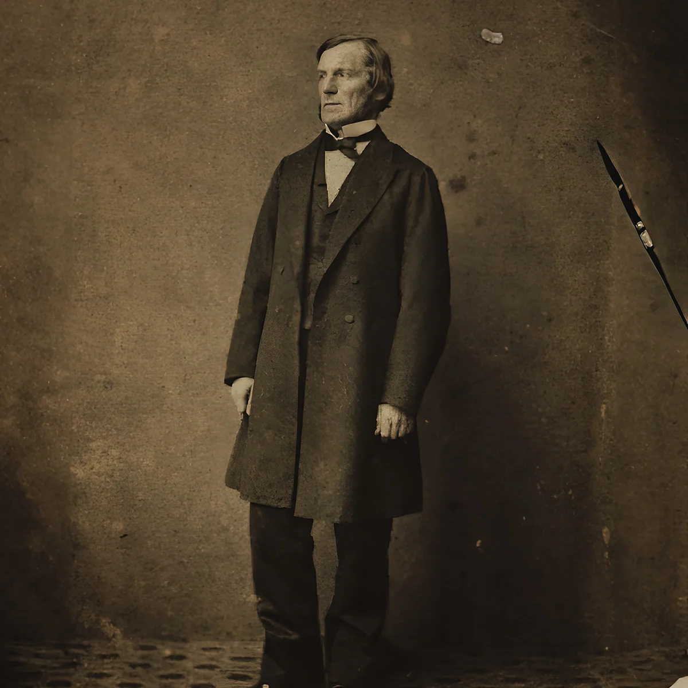
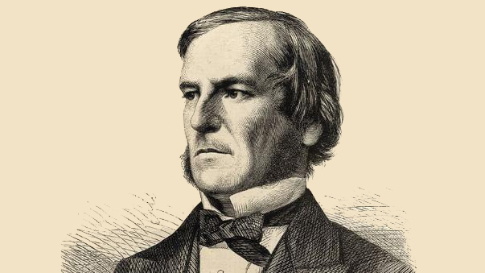
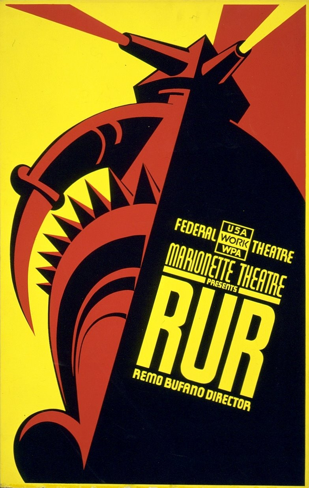
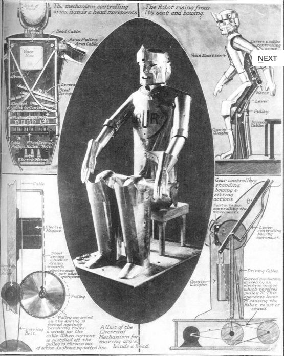
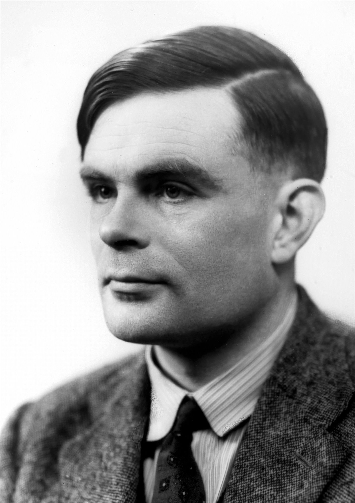
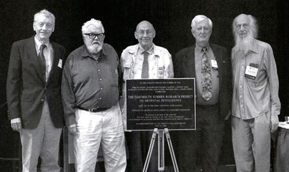
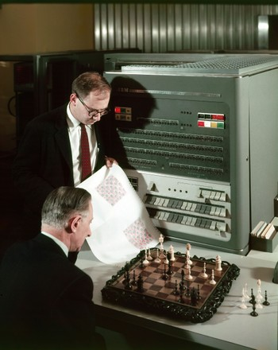
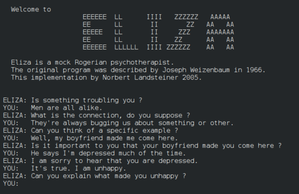
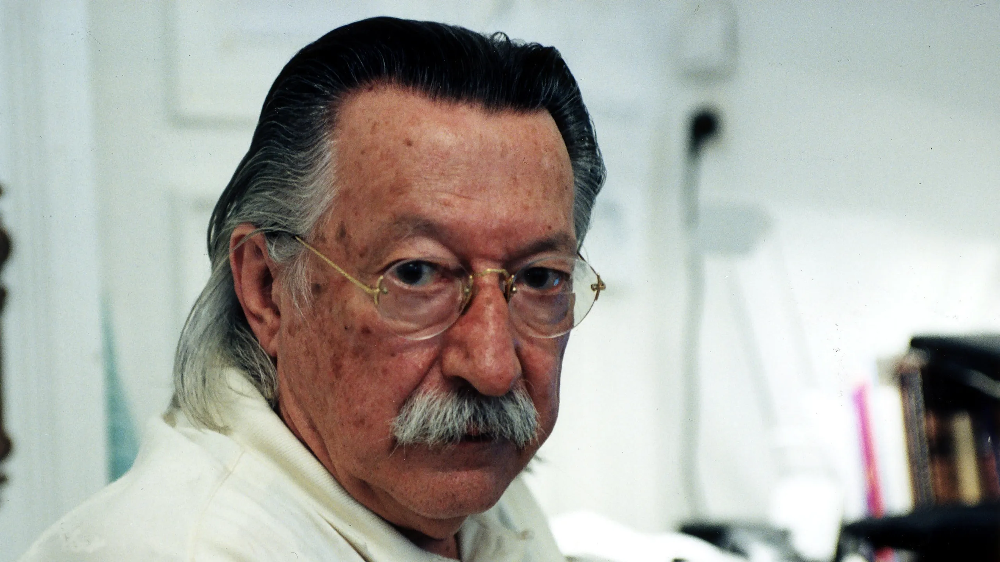

1843

Ada Lovelace sentó las bases para escribir el primer programa informático. “En otras palabras, creía que la inteligencia artificial no puede crear nada original sin aprender de la aportación humana”, señala la autora del artículo del NIST.
Durante su infancia, fue una niña muy curiosa y su madre se ocupó de que aprendiera matemáticas ya que no quería que fuera poeta como su padre, que se había desentendido de ellas, apunta un documento difundido por No more Matildas, un movimiento creado por la Asociación de Mujeres Investigadoras y Tecnólogas (Amit).
1854
El matemático George Boole argumenta por primera vez en la historia que el razonamiento lógico podría sistematizarse de la misma manera que se resuelve un sistema de ecuaciones.


Año en el que George Boole (matemático) argumenta por primera vez en la historia que el razonamiento lógico podría sistematizarse de la misma manera que se resuelve un sistema de ecuaciones, tomando como valores V/F o SI/NO. Estos valores bivalentes y opuestos podían ser representados por números binarios de un dígito (bits).
1921

Es en este año que el escrito Karek Apek acuña el término “robot” en su obra de teatro R.U.R. Su etimología proviene de la palabra robota, que en muchas lenguas eslavas significa “trabajo duro”.
Escrita en 1921, para designar a unas máquinas pensantes que se sublevan y terminan por matar a su creador.

1936
Alan Turing fue el creador de la máquina electromecánica precursora de los computadores modernos, la cual logró desbloquear los códigos secretos de los submarinos alemanes durante la Segunda Guerra Mundial. Fue un trabajo considerado clave para la obtención de la victoria aliada del mencionado conflicto.

El considerado padre de la computación moderna, Alan Turing, publica este año su artículo sobre los números computables en el que introduce el concepto de algoritmo y sienta las bases de la informática.
1950

Turing publica "Maquinaria de computación e inteligencia", donde rebate a Lady Lovelace y propone que las máquinas sí pueden pensar.
Crea el "Juego de la imitación" (Test de Turing) para evaluar si una máquina posee comportamiento inteligente indistinguible del humano.
1956
John McCarthy propone formalmente el término "Inteligencia Artificial" durante una conferencia en Dartmouth College, marcando el inicio oficial del campo y de la primera ola de investigación.


Uno de los rasgos más distintivos de esta primera ola fue el fuerte optimismo que predominó entre los investigadores, quienes sostenían que, con suficientes avances en programación y capacidad de cómputo, sería posible replicar en pocas décadas funciones complejas del pensamiento humano
1958

Alex Bernstein desarrolla el primer software de ajedrez, que en su primera demostración se rindió tras el primer movimiento del humano, aunque luego fue afinado para jugar a nivel principiante.
Alex Bernstein creó una máquina capaz de jugar ajedrez, la cual fue programada para ello. Esta se basaba en reglas y tardó muchos años en funcionar correctamente.

1966
Joseph Weizenbaum crea ELIZA, el primer chatbot de la historia, que simulaba conversaciones terapéuticas mediante parámetros predefinidos y respuestas por defecto.


Para su creador, Eliza era poco más que una broma. Se trataba de una "psicóloga" que reconocía palabras clave. Ante una petición de ayuda, el chatbot respondía con frases hechas sobre una variedad de temas o, si no encontraba palabras asociadas en su base de datos